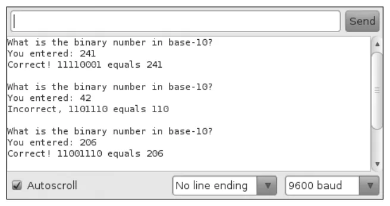

In this project we’ll use random numbers, the Serial Monitor, and the circuit created in Project 16 to create a binary quiz game. The Arduino will display a random binary number using the LEDs, and then you will enter the decimal version of the binary number using the Serial Monitor. The Serial Monitor will then tell you whether your answer is correct and the game will continue with a new number.
The Algorithm
The algorithm can be divided into three functions. The displayNumber() function will display a binary number using the LEDs. The getAnswer() function will receive a number from the Serial Monitor and display it to the user. Finally, the checkAnswer() function will compare the user’s number to the random number generated and display the correct/incorrect status and the correct answer if the guess was incorrect.
The Sketch
The sketch generates a random number between 0 and 255, displays it in binary using the LEDs, asks the user for his or her answer, and then displays the results in the Serial Monitor. You’ve already seen all the functions used in the sketch, so although there’s a lot of code here, it should look familiar. We’ll dissect it with comments within the sketch and some commentary following.
// Project 17 - Making a Binary Quiz Game
#define DATA 6 // connect to pin 14 on the 74HC595
#define LATCH 8 // connect to pin 12 on the 74HC595
#define CLOCK 10 // connect to pin 11 on the 74HC595
int number = 0;
int answer = 0;
❶ void setup()
{
pinMode(LATCH, OUTPUT); // set up the 74HC595 pins
pinMode(CLOCK, OUTPUT);
pinMode(DATA, OUTPUT);
Serial.begin(9600);
randomSeed(analogRead(0)); // initialize the random number generator
displayNumber(0); // clear the LEDs
}
❷ void displayNumber(byte a)
{
// sends byte to be displayed on the LEDs
digitalWrite(LATCH, LOW);
shiftOut(DATA, CLOCK, MSBFIRST, a);
digitalWrite(LATCH, HIGH);
}
❸ void getAnswer()
{
// receive the answer from the player
int z = 0;
Serial.flush();
while (Serial.available() == 0)
{
// do nothing until something comes into the serial buffer
}
// one character of serial data is available, begin calculating
while (Serial.available() > 0)
{
// move any previous digit to the next column on the left; in
// other words, 1 becomes 10 while there is data in the buffer
answer = answer * 10;
// read the next number in the buffer and subtract the character '0'
// from it to convert it to the actual integer number
z = Serial.read() - '0';
// add this digit into the accumulating value
answer = answer + z;
// allow a short delay for any more numbers to come into Serial.available
delay(5);
}
Serial.print("You entered: ");
Serial.println(answer);
}
❹ void checkAnswer()
{
//check the answer from the player and show the results
if (answer == number) // Correct!
{
Serial.print("Correct! ");
Serial.print(answer, BIN);
Serial.print(" equals ");
Serial.println(number);
Serial.println();
}
else // Incorrect
{
Serial.print("Incorrect, ");
Serial.print(number, BIN);
Serial.print(" equals ");
Serial.println(number);
Serial.println();
}
answer = 0;
delay(10000); // give the player time to review his or her answers
}
void loop()
{
number = random(256);
displayNumber(number);
Serial.println("What is the binary number in base-10? ");
getAnswer();
checkAnswer();
}Let’s review how the sketch works. At ❶, void setup() configures the digital output pins to use the shift register, starts the Serial Monitor, and seeds the random number generator. At ❷, the custom function displayNumber() accepts a byte of data and sends it to the shift register, which uses LEDs to display the byte in binary form via the attached LEDs (as in Project 16). At ❸, the custom function getAnswer() accepts a number from the user via the Serial Monitor (as in Project 14) and displays it, as shown in Figure 6-7.
The function checkAnswer() at ❹ compares the number entered by the player in getAnswer() against the random number generated by the sketch in void loop(). The player is then advised of a correct or incorrect answer with corresponding binary and decimal values. Finally, in the main void loop() from which the program runs, the Arduino generates the random binary number for the quiz, then calls the matching functions to display it with hardware, and then receives and checks the player’s answer.
Figure 6-7 shows the game in play in the Serial Monitor.
